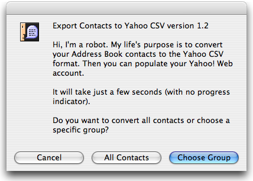
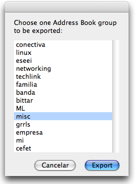
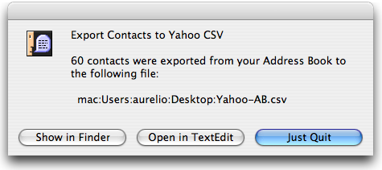

AppleScript to export the Address Book contacts to the Yahoo! CSV format. Then they can be uploaded to the Yahoo Web-based Address Book. It is a nice way to have your contacts available everywhere.
- Free / Open Source AppleScript (Mac only)
- See installation instructions
- See source code (GitHub)
User Comments
- "This is BRILLIANT! I've been waiting for something like this for quite a while. Now I don't need to do five steps... using Entourage. Thank you."
- — Stephen
- "The best script ever! Amazing."
- — Juan Pablo Piombo
Road Map
Step 1
Click on the Choose Group button.

Step 2
Select the desired group. If it is your first time, choose a group with few contacts, so the program will execute faster. Click on the Export button and the processing will begin. It takes just a few seconds to convert the contacts data. Huge amount of contacts can take around a minute or more.

Step 3
Work done! The contacts were exported to the Yahoo-AB.csv file on your Desktop. Now you can log into Yahoo! and import your contacts.

Notes
- Update 1: Yahoo has changed one field name, so the Yahoo IM field will not be exported on the current 1.2 version. All you have to do is to change from "Yahoo! ID" to "Messenger ID" on the script file. It will be fixed on the next version.
- Update 2: Hank Dolben has modified the script adding two new features: [1] Address Book groups mapped to Yahoo! Distribution Lists (instead Category) [2] A different e-mail handling, always trying to fill the three Yahoo! e-mail fields. These changes will be added to the 1.3 version.
- The reverse process (Yahoo! to Mac) can be made using this Python script.